Цифровое искусство
Стартовая экспозиция объединила петербургских художников и размышление о том, как цифровой файл снимает границы между городами и галереями.
Санкт-Петербург · 2018
Veresk night art gallery — пространство Ильи Вереска на Рубинштейна, созданное для выставок, встреч и искусства в ночном городе.
Читать историю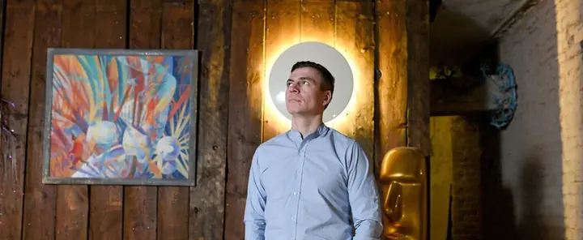
публичное открытие
центр ночной жизни Петербурга
заявленный ночной график
Замысел
Илья Вереск выбрал улицу, которая живёт ночью, и предложил альтернативу привычному маршруту по барам. Галерея занимала несколько залов на верхнем этаже и соединяла постоянную экспозицию с временными выставками, лекциями и кинопоказами.
Первую выставку посвятили цифровому искусству. В пространстве также показывали авторские световые объекты Ильи, скульптуры и проект «Руки» — к открытию коллекция насчитывала более двадцати слепков известных людей.
Фотоархив
Интерьеры, световые объекты, участники выставок и художественная акция на улице Рубинштейна.
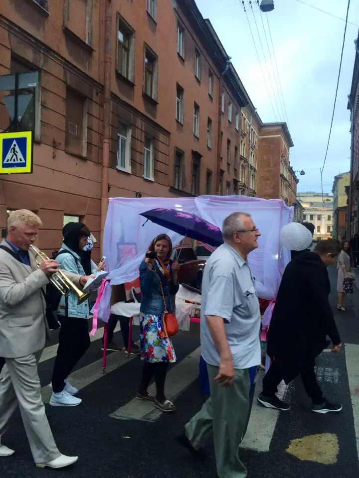
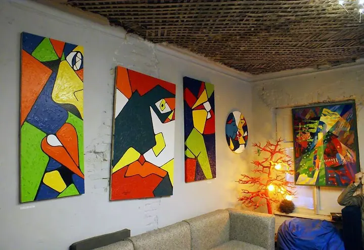
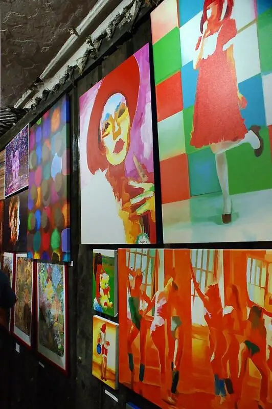
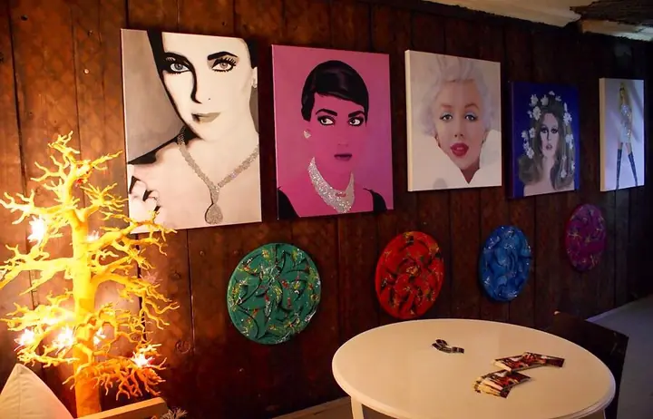
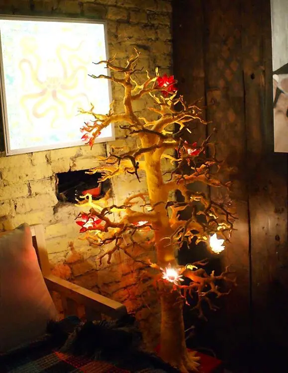
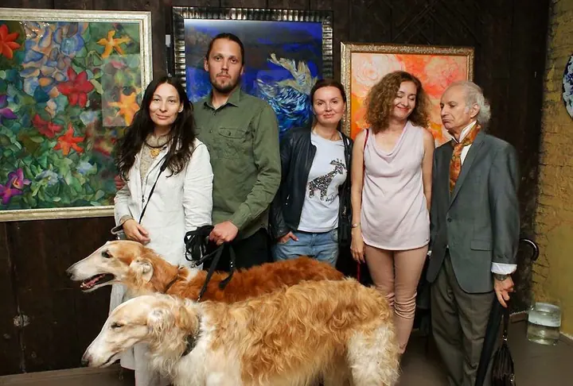
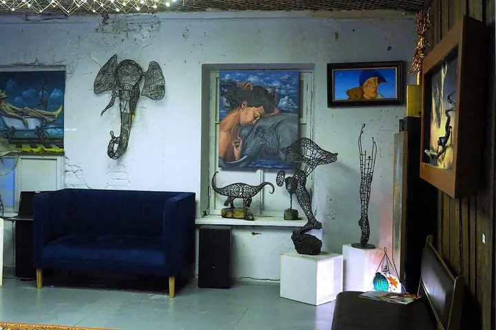
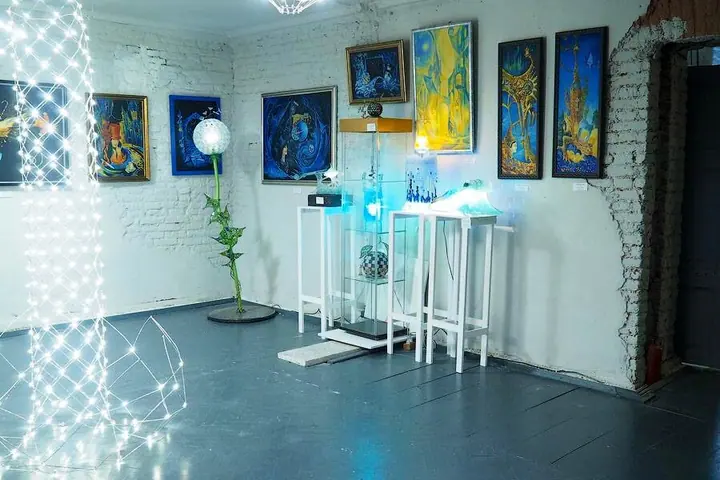
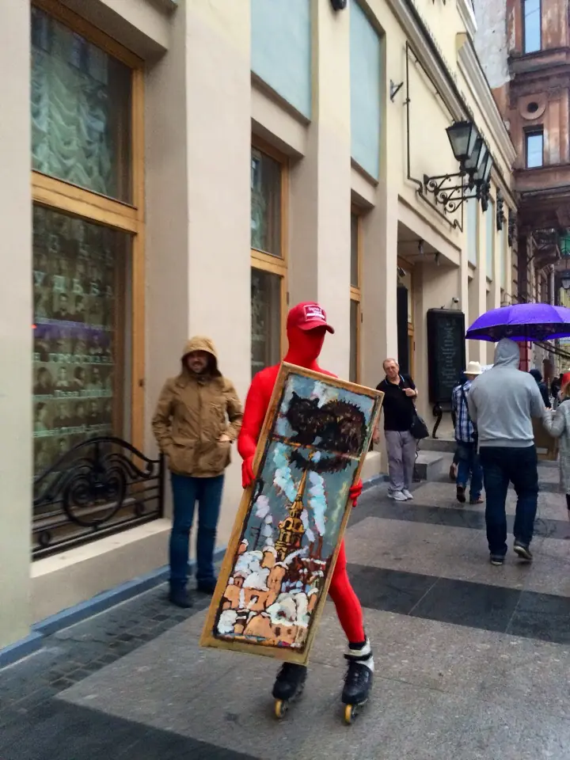
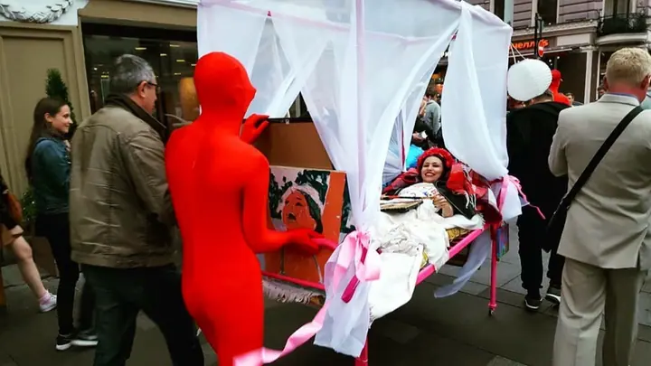
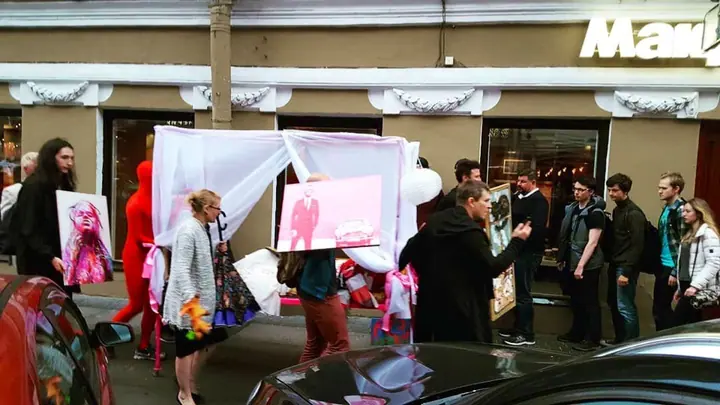
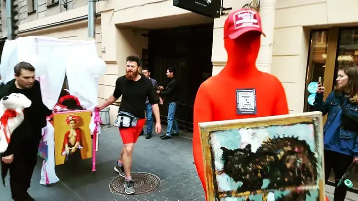
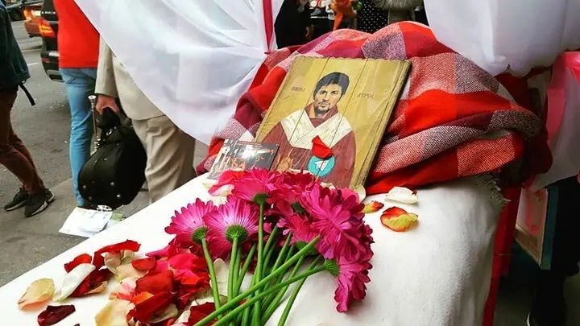
Фотографии предоставлены заказчиком сайта. Материалы события также опубликованы в репортаже Fontanka Calendar.
Художник и пространство
Ещё до открытия галереи Вереск работал на стыке дизайна и искусства: создавал светильники, световые инсталляции, интерьерные и ландшафтные объекты. Для него форма и свет должны вызывать эмоциональный отклик и менять восприятие пространства.
Интервью об Илье ВерескеАрхив событий
Галерея стала площадкой для разных авторов и форматов современного искусства.
Стартовая экспозиция объединила петербургских художников и размышление о том, как цифровой файл снимает границы между городами и галереями.
Слепки Бориса Гребенщикова, Сергея Чигракова, Евгения Гришковца, Вячеслава Малафеева и других участников стали частью пространства.
29 июня 2018 года здесь прошли выставка «Яркие миры» и предпоказ трэш-аукциона «Искусство за бухло», сохранившиеся в большом фоторепортаже.
Событие · рок-фестиваль
Видео из архива VERESK сохраняет атмосферу рок-фестиваля — сцена, люди и искусство в одном пространстве.
Открыть видео во VKПубликации
Следующая история — ваша
Расскажите об идее. Обсудим композицию, выезд, сроки и стоимость.